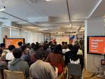

kubell Creator's Note
https://creators-note.chatwork.com/
ビジネスチャット「Chatwork」のエンジニアのブログです。
フィード

プロダクト組織の生産性向上に向けた取り組み『Product Unit Day』を実施しました
kubell Creator's Note
こんにちは！！コミュニケーションプラットフォームディビジョンでiOSエンジニアをしている中山 龍(@ryu_develop)です！僕は4月から社会人3年目になりました🎉 この2年を振り返ると運動習慣はないまま食べる量だけは維持し続けた2年間でした。今年こそは運動習慣をつけられるよう、フィットネスジムに入会して日々運動をしています💪 さて、コミュニケーションプラットフォームディビジョン プロダクトユニットでは、組織全体の生産性向上を目的として、月次開催のオフラインイベント『Product Unit Day』を立ち上げ、4月に第1回目を開催しました！この記事では、『Product Unit Day…
2日前

PHPエンジニア実態調査を行いました！
kubell Creator's Note
こんにちは！料金プラングループでPHPエンジニアをしているヤシロです。 弊社は先日開催されたPHPerKaigi 2025にブース出展してきました。 この記事ではブース出展時に実施したエンジニア実態調査アンケートの集計結果を大公開します。 当日、アンケートにご回答いただいた皆様、ご協力いただき本当にありがとうございました！！ ブース出展の様子は以下の記事でご紹介しているので、こちらも合わせてご覧くださいー creators-note.chatwork.com
1ヶ月前
デュアル・トラック・アジャイルを実践しているチームが、どういったチームパフォーマンス指標を運用しているか
kubell Creator's Note
概要 デュアル・トラック・アジャイルを実践する認証グループが、チームパフォーマンスを評価するための新しい指標体系を導入した経緯とその内容について詳述します。 従来のFour Keysがデリバリーに偏っている問題を解決するため、ディスカバリーとデリバリーの両方を評価できる指標運用を開発しました。 具体的には、まず、スプリントバックログに、デリバリーのワークに限らず、ディスカバリーのワークを表すチケットも積む様にします。これでチームの全活動のトラッキングを可能とします。スプリントゴールには、デリバリーとディスカバリーの二つのゴールを設定します。 その上で、「ディスカバリーとデリバリーの合計の消化ス…
1ヶ月前
PHPerKaigi 2025 にブース出展してきました！
kubell Creator's Note
みなさん、こんにちは！ 2020年からkubellでPHPエンジニアをしているやまごし(@ymgn_ll)です。 先日開催された PHPerKaigi 2025 にて kubell はシルバースポンサーとして、弊社エンジニアのセッション登壇&ブースを出展という形で参加させていただきました。 kubellブースに来ていただいた皆さんありがとうございました！ phperkaigi.jp 3月21日~23日までの3日間にわたって、数多くの方々にブースへの訪問とアンケートへのご回答をいただけまして、様々な情報交換もでき非常に盛り上がりました！ 改めてPHPerKaigi 2025にご来場いただいた皆様…
2ヶ月前
kubellはPHPerKaigi 2025のスポンサー＆ブース出展＆セッション登壇します！
kubell Creator's Note
こんにちは！料金プラングループでPHPエンジニアとして「Chatwork」の開発をしている坂中です。 3月も気付けば後半に差し掛かっていてもう春を感じるような気温になってきていますね。 そんな今週末にはPHPerの一大イベント「PHPerKaigi 2025」が開催されます🎉🎉 kubellはシルバースポンサーとして参加させていただいており、ブース出展＆セッション登壇予定です。
2ヶ月前
新卒2年目iOSエンジニアの活動記録
kubell Creator's Note
こんにちは！iOSアプリ開発グループでiOSエンジニアをしている中山 龍(@ryu_develop)です！ もう3月！23新卒として入社した僕もそろそろ2年目が終わろうとしております。 本記事では去年の記事(新卒1年目iOSエンジニアの活動記録 - kubell Creator's Note)の続編として、僕自身が新卒2年目iOSエンジニアとして、この1年でどんな活動してきたのか！その内容について書ける範囲でまとめて紹介できればと思います🥳 24新卒の後輩が入社！ Privacy Manifests対応 『先輩社員研修』と『アジャイルスクラム研修』 各種機能開発プロジェクトのリード 社名変更 …
2ヶ月前
アカウント設定のフロントエンド開発における技術選定の振り返り
kubell Creator's Note
こんにちは。認証グループの山下です。 今回は約2年前に行ったアカウント設定のフロントエンド開発における技術選定とこれまでの運用を振り返りたいと思います。
2ヶ月前
スプリントにおけるディスカバリー・デリバリーの可視化
kubell Creator's Note
こんにちは。認証グループのいまひろです。 今回は、Jiraのダッシュボードを利用した、スプリントにおけるディスカバリー・デリバリー・運用の各プロセスをどのように可視化したかについてお話しさせていただきます。 Jiraのダッシュボードで可視化することにより、チームの活動をより効果的に把握することができ、改善のための具体的な指針を得ることができるようになりました。
3ヶ月前
PHP カンファレンス 2024「PHPエンジニア実態調査」 レポート
kubell Creator's Note
こんにちは、「Chatwork」のバックエンド開発をしている、はたなかです。 弊社は先日開催された PHP カンファレンス 2024 にブースを出展いたしました。 この記事では、ブース出展時に実施したアンケートの集計結果をお伝えします。 また、当日ご参加いただいた皆様には、ご協力いただき誠にありがとうございました。 なお、ここでの集計結果は、回答数が極端に少ない選択肢などについて、若干の丸めを行っている場合がありますので、あらかじめご了承ください。 ブース出展の様子は以下の記事でご紹介しておりますので、もしよろしければそちらもあわせてご覧ください。 creators-note.chatwork…
3ヶ月前
認証グループのストーリーチケットに対するテストフローの更なる改善
kubell Creator's Note
こんにちは。認証グループのいまひろです。 前回、チーム内のテスト管理のフロー改善についてという記事で、認証グループ内でのJiraのストーリーチケットに対するテストフロー改善についてお話しさせていただきました。 簡単にまとめると、認証グループのストーリーチケットに対するテストは、前回執筆時点で下記のようなフローになっていました。 Gherkin記法でテストを作成 GitHubのプルリクエストのレビューを経てTestRailのテストケースを自動作成 Jiraの拡張アプリでJiraとTestRailのTest Runとを紐付け テストを実施しTestRail上で結果を入力 Jira上でテスト実施の進…
4ヶ月前
PHP Conference 2024 に参加してきました！
kubell Creator's Note
こんにちは、kubellでPHPエンジニアをしている矢代です。 先日、PHPカンファレンス2024にブースを出展してきました。 多くの方々にアンケートへのご回答をいただき、心より感謝申し上げます！！
4ヶ月前
E2E テストの自動化から可視化 - Playwright × Amplify Hosting -
kubell Creator's Note
いつも読んでいただき、ありがとうございます。 BPaaS プロダクトユニットの山本です。 本記事では、私たちが取り組んでいる BPaaS プロダクト開発において、E2E テストの自動化から結果の可視化までをどのように実装したのか、詳しく紹介します。
4ヶ月前
大規模DB(メッセージDB)のデータ移行でやったこと
kubell Creator's Note
株式会社kubell 技術基盤開発部の佐藤（@Satoooooooooooo）です。 こちらは kubell Advent Calendar 2024 シリーズ3 12月25日分の記事です。 この記事ではプロダクトオーナー目線でふりかえる大規模DBリプレイスの続編として、どのようにデータ移行をしたのか書いてみようと思います。 ※プロジェクトの概要については前回の記事を参照してください creators-note.chatwork.com
5ヶ月前
kubellの2024年振り返り（技術面）
kubell Creator's Note
こんにちは、kubellにて執行役員をしております田中と申します。主にChatworkプロダクトの技術側面の管掌をする立場の者です。この記事はkubell Advent Calendarの25日目の記事になります。 qiita.com 本日はkubell Advent Calendarの最終日の投稿としまして、今年のkubellのプロダクトや技術周りのふりかえりをして締めたいと思います。
5ヶ月前
新規事業チームでの挑戦
kubell Creator's Note
IC本部 DXソリューション開発部の山下です。こちらはkubell Advent Calendar 2024 24日目の記事になります。 「認証チームにいたのでは？」と驚かれる方もいるかもしれませんが、実は11月から新規事業チームにもジョインしました！ 現在は、兼務という形でこれまでの仕事に加えて、新たな挑戦に取り組んでいます。 この記事では、「なぜ新規事業チームに参加したのか？」「どんなことをしているのか？」といった点を中心に、新しい環境での取り組みについてご紹介したいと思います。
5ヶ月前
Androidアプリ開発部で合宿を行い、技術的負債についてみんなで考えました〜2024年冬〜
kubell Creator's Note
Androidアプリ開発部の奥澤です。この記事はkubell Advent Calendar 2024（シリーズ2）12月24日の記事です。 2024年も残すところ1週間となりました。今年は夏頃に体重がピークに達してしまったのですが、その後半年かけて5kg以上減量し、1年ぶり2回目のダイエットに成功しました。前回はその後リバウンドしてしまったので成功かどうか微妙なところでしたが、今回はリバウンドせずにキッチリ成功させたいです。目標体重までもう一息、頑張ります。 ダイエットと言えば、私の所属するAndroidアプリ開発部では技術的負債のダイエットにも取り組んでいます。今月はAndroidアプリ開…
5ヶ月前
Xcode CloudからSonarQube Cloudへカバレッジデータを送ってみた
kubell Creator's Note
Xcode Cloudとは developer.apple.com Xcode Cloudとは、Appleが提供するCI/CDサービスです。 他のCI/CDサービスと比べて独特な仕様もありますが、比較的安価だったり、純正なだけあって証明書まわりの管理が楽になるなどのメリットがあり、弊社のiOSアプリ開発でも利用しています。 SonarQube Cloudとは www.sonarsource.com SonarQube Cloudとは、コードの品質やセキュリティの問題を自動的に検出してくれるツールです。例えばPull Requestを作成すると差分のコードを解析してPRにコメントしてれたりします…
5ヶ月前
新卒1年目がデータベースのバージョンアップ対応で体感したこと
kubell Creator's Note
こんにちは！サーバーサイド開発部の松田です。 こちらは kubell Advent Calendar 2024 シリーズ 2 12月23日の記事です。 2024年4月に入社してから約半年間、Amazon Aurora MySQL v2のEOL対応を行うプロジェクトに参加しており、そのプロジェクトの中で体感したことをお伝えします。 docs.aws.amazon.com 読者として、「EOL対応の経験がない新卒エンジニア」の方を想定しています。 今回の内容は、「多くの方がEOL対応を経験する中で通られたであろう道を、私も通ることができた」という話になるので、すでに経験がある方にとっては新しい内容…
5ヶ月前
JavaScriptの便利な構文に潜む罠
kubell Creator's Note
この記事は kubell Advent Calendar 2024 12/23の記事です。 こんにちは、2024年4月に新卒でkubellに入社した石田です。 6月にフロントエンド開発部に配属されてから約半年が経ちました。 今回は半年間の業務の中で一番印象に残っている、フロントエンドのパフォーマンスチューニングについて書こうと思います。 ちなみに私は学生時代に競技プログラミングをやっていたこともあり、パフォーマンスチューニングが大好きです :D
5ヶ月前
"発信ウェーブ"がちゃんとファン増に繋がっていた話
kubell Creator's Note
この記事は kubell Advent Calendar 2024 及び 技術広報 Advent Calendar 2024 20日目にエントリーしています。 本日は、kubellで採用ブランディングを担当している宮脇が書きます！ kubell Advent Calendar 2024 は、今年はなんとシリーズ3まで拡張！！ エンジニアはもちろん、プロダクトマネージャーやデザイナー、kubellの新規事業に携わっているメンバーまで様々な記事が集まっていますので、ぜひ読んでみてください⭐︎
5ヶ月前
「相応に良い設計」によって失われるものと、そのリカバリー方法
kubell Creator's Note
こちらは kubell Advent Calendar 2024 シリーズ3 12月20日分の記事です。 こんにちは。都志（@louvre2489）です。 プロダクト開発チームのEMをやっています。 先日、「開発スピード」と「プロダクト品質」というタイトルでブログを書きました。 creators-note.chatwork.com こちらで開発は原則として相応の時間をかけて相応に良い設計を行い、その中で相応に速いリリースを行うことを目指すべきであると書きました。しかし、それだけの説明では「そんなことしたら徐々にプロダクト品質が低下していってしまうじゃないか！」という印象を受ける人もいるかと思い…
5ヶ月前
プロダクトオーナー目線でふりかえる大規模DBリプレイス
kubell Creator's Note
みなさんこんにちは、株式会社kubell（旧Chatwork株式会社）で エンジニアリング・マネージャー（まだ見習い）兼プロダクトオーナー（これも半人前）をやっております、辻（@crossroad0201）です。 この記事は弊社 kubell の Advent Calendar 2024 、12月20日の記事です。 こちらのアドベントカレンダーではエンジニアのみならず、プロダクトマネージャーやデザイナー、弊社のさまざまな職種のメンバーが記事を寄せていますので、ぜひほかの記事も見てみていただければと思います。 この記事では、私の所属チームが今年取り組んだ仕事の中でも最も規模が大きかった「メッセー…
5ヶ月前
チームで実践するスコープマネジメントの第一歩
kubell Creator's Note
こんにちは。kubell iOSアプリ開発部の福井 ( @tinpay ) です。 こちらは、kubell Advent Calendar 2024 19日目の記事となります。 こちらの記事では、プロジェクトを進める上で欠かせない「スコープマネジメント」をテーマに少しお話しさせていただこうと思います。 「それってマネージャーがやることでしょ？」と思う方もいるかもしれませんが、実はそんなことはありません。スコープマネジメントは、チーム全員が意識することでプロジェクトの成功率がぐっと上がる、とても重要な要素です。 この記事では、弊社iOSアプリ開発部での実践例を交えながら、チームで行っているタスク…
5ヶ月前
チーム内の開発とデザインレビューについて
kubell Creator's Note
認証チームの山下です。 こちらはkubell Advent Calendar 2024 19日目の記事になります。 認証チームではAuth0を活用した認証機能の提供に加え、アカウント管理系の機能も担当しており、具体的にはアカウント設定機能の開発・運用を行っています。 例えば、次のような機能が含まれます ユーザーが自身の情報を確認・変更できる機能（例: メールアドレスやパスワードの変更） これらの機能では、エッジケースを含めた動作確認が求められます。また、アカウント関連の設定は 一度変更すると戻すのが面倒 という課題もあります。 例えば、パスワード変更のデザインレビューを行うために実際にパスワー…
5ヶ月前
Androidアプリ開発部の「four keys」大公開！赤裸々な1年を振り返る
kubell Creator's Note
概要 こんにちは、kubellでAndroidアプリ開発部のエンジニアリングマネージャーをしている牛窪です（@sudo5in5k）。 弊部署にて「four keys」の計測を始めてから1年と少しが経過しました。この記事では、その計測結果を公開し、成果や失敗を率直に振り返りたいと思います。 概要 four keysの定義 計測の仕方 計測結果 デプロイ頻度 リードタイム 変更障害率 サービス復元時間 評価 デプロイ頻度が落ちていないか？ 全体的に下降している？ 2024/8と2024/11に極端に落ち込んでいる？ 変更障害率が連続で上がっている期間がある？ サービス復元時間はかなり改善できている…
5ヶ月前
新卒エンジニアが料金プランチームでやってきたこと・学んだこと
kubell Creator's Note
初めまして、料金プランチームでエンジニアをしている矢代です。 私は2024年4月にkubellに新卒入社し、研修を終えた後に料金プランチームに配属されました。 この記事では、私が料金プランチームに配属されてから行った業務や、そこで学んだことを紹介します。
5ヶ月前
「レビュー見る会」~ Meetingひとつでレビューにかかる時間を平均37時間削減した話 ~
kubell Creator's Note
こんにちは！新卒入社してからいつの間にかもうすぐ4年目が終わるという驚愕の事実に震えているグロースエンジニアリング部の若林 (@wakakuuma)です。 さて今回の内容は、題して「レビュー見る会」~ Meetingひとつでレビューにかかる時間を平均37時間削減した話 ~です！！ まず「レビュー見る会」について簡単に説明すると、スプリント開始直後に行う事前スプリントレビューのようなものです。 事前にやるスプリントレビュー？？何言っとんねんと思われている方、安心してください！この後じっくり説明させていただきます。早く内容を知りたい方は「レビュー見る会について」までスキップしていただければと思いま…
5ヶ月前
会社とメンバーの方向性を合わせていく対話について
kubell Creator's Note
こちらは kubell Advent Calendar 2024 シリーズ2 12月17日分の記事です。 EMとして入社しました、久村です。 2024年9月に入社し、濃密な4ヶ月目を過ごしています。 新しい環境での感じていることに加えて、全社のマネジメント合宿もあり、マネジメントに対する考え方をアップデートすることができたのでその内容について記事にまとめます。
5ヶ月前
Amazon EventBridge Pipesを使ってChatworkにメッセージを送ってみた
kubell Creator's Note
こんにちは！BPaaSプロダクト部の片岡です。 この記事はkubell Advent Calendar 2024（シリーズ 2）の16日目の記事です。 本投稿はAmazon EventBridge Pipesを使ってChatworkにメッセージを送れることを確認した内容となっています。 Chatwork APIでメッセージを投稿する場合、APIの利用回数制限がありリトライ処理が必要です。 AWS環境化においてはLambdaで実装することが多いのではないかと思います。 EventBridge PipesのAPI Destinationsはコードを書かずともAPI呼び出しおよびリトライ処理まで行っ…
5ヶ月前
iOSチームの機能開発プロジェクトをどのようにリードしているのか？〜約1年の経験を振り返る〜
kubell Creator's Note
こんにちは！iOSチームで「Chatwork」の開発をしている中山 龍(@ryu_develop)です！ 12月の頭にはiOSDCぶりに東京に行きましたが、街がライトアップされていて冬を感じました。そうです、アドベントカレンダーの季節です🎄💫 ということで、kubell Advent Calendar 12/16の記事です はじめに 本記事に登場する名称とその意味✍️ プロジェクト内での自分の役割 1️⃣ 進捗・作業工程・リソースの管理 🗓️ 実装着手前 実装着手中 2️⃣ コミュニケーション 🗣️ プロジェクトチーム プロジェクト担当のiOSメンバー プロジェクト担当でないiOSメンバー 3…
5ヶ月前